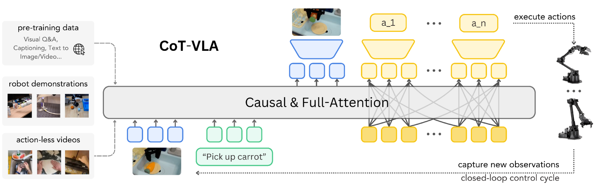
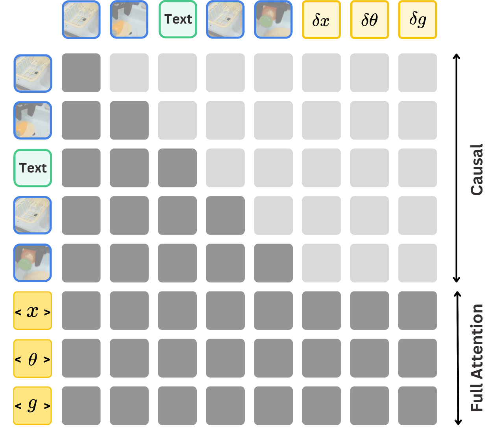
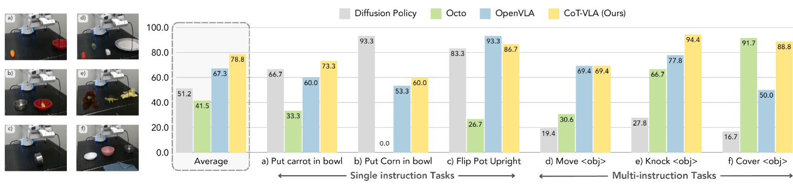
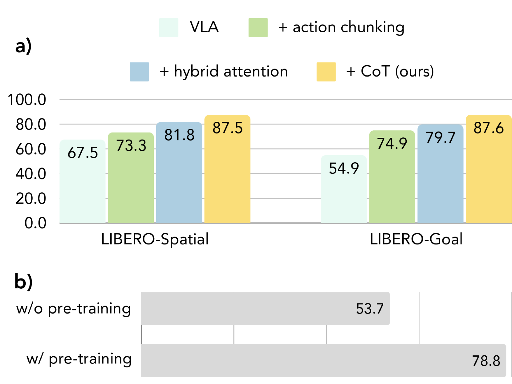

CoT-VLA: Visual Chain-of-Thought Reasoning for Vision-Language-Action Models
1. Quick overview of the paper
| Reading targeting item | content |
|---|---|
| What should the paper solve? | Existing VLA usually predicts actions directly from observation and language, lacking explicit intermediate reasoning, especially lacking temporal planning or reasoning capabilities in complex operation tasks. |
| The author's approach | Use future image frames as visual CoT: first predict the sub-target image after $n$ steps, and then use full attention to generate action chunks in parallel; visual reasoning can be trained with videos without action annotations. |
| most important results | LIBERO's average success rate is 81.13%, which is higher than OpenVLA fine-tuned's 76.5%; the abstract states that the real robot task is improved by 17% compared to SOTA VLA, and the simulation benchmark is improved by 6%. |
| Things to note when reading | The main contribution is not just "adding an image generation module", but combining visual token generation, action token discretization, hybrid attention, action chunking and two-stage training into a deployable VLA system. |
difficulty rating
4/5. Understanding the main idea requires a background in VLA, imitation learning, discrete visual tokens, autoregressive image generation and robot benchmark; at the reproducibility level, you also need to understand action discretization, action chunking, closed-loop deployment and multi-data hybrid training.
keywords
Vision-Language-Action Models; Visual Chain-of-Thought; Subgoal Image Generation; Hybrid Attention; Action Chunking; Robot Manipulation
Core contribution list
- Propose visual chain-of-thought for VLA.The paper defines the sub-target image as the intermediate reasoning step before action prediction, so that the robot strategy first generates a planning state in the pixel space and then outputs the action.
- Building a CoT-VLA system.The system is based on a unified multi-modal model such as VILA-U that can understand/generate images and text, and adds hybrid attention: text/image generation uses causal attention, and action prediction uses full attention.
- Take advantage of action-less videos.Sub-target image prediction does not require action annotation, so in addition to Open X-Embodiment robot data, video data such as Something-Something V2 and EPIC-KITCHENS-100 are also introduced in the pre-training stage.
- Validated on simulated and real robots.The experiments cover LIBERO, Bridge-V2 and Franka-Tabletop, and analyze the effects of action chunking, hybrid attention, visual CoT and pre-training through ablation.

2. Motivation
2.1 What problem should be solved?
The paper focuses on a structural problem of VLA in robot operation: many existing models map visual observations and language instructions directly to actions, formally like an end-to-end policy. Although such models can take advantage of VLM's scene understanding capabilities, there is no explicit planning state in the middle, so the author believes that they lack temporal planning or reasoning about "what should the scene look like next."
In a long-range operation task, the robot not only needs to know "what to grasp", but also "which target state the scene should move towards after grasping". The choice of CoT-VLA is to let the model generate a future image $\hat{s}_{t+n}$ before taking action, and put the "intention" on the visualized sub-goal state.
2.2 Limitations of existing methods
The paper divides the limitations of existing methods into two categories. The first category is direct VLA: OpenVLA, RT/PaLM-E. The first category of methods mainly learns $P(a_t \mid s_t, l)$ and lacks explicit intermediate reasoning. The second category is robotics CoT or subgoal methods: some methods use language plans, keypoints, bounding boxes or reward guidance as intermediate representations, but these representations are either too abstract or require additional preprocessing or annotation pipelines.
The reason why the author chose subgoal image is that the image state naturally exists in robot demonstrations and general videos, and there is no need for additional manual marking of key points or boxes; it also expresses object positions, contact relationships, and scene states more directly than plain text plans.
2.3 The solution ideas of this article
The high-level idea of CoT-VLA is to split action generation into two conditional generation problems:
- Based on the current observation $s_t$ and the language instruction $l$, generate the future sub-target image $\hat{s}_{t+n}$.
- Based on the current observation, language instructions and sub-target images, an action sequence of length $m$ is generated.
This design allows the model to learn "how the future visual state changes" from videos without action annotations, while still using robot demonstrations to learn "how to use actions to reach that state."
4. Detailed explanation of method

4.1 Problem setting and data format
The paper considers two types of data:
| data | form | Purpose |
|---|---|---|
| Robot demonstration $D_r$ | $D_r=\{(l, \mathbf{a}_{1...T}, \mathbf{s}_{1...T})\}$ | It trains both sub-target image generation and action prediction. |
| No action video $D_v$ | $D_v=\{(l, \mathbf{s}_{1...T})\}$ | Only visual sub-object predictions are trained since there are no action labels. |
Among them, $l$ is the language command, $\mathbf{s}_{1...T}$ is the image observation sequence, and $\mathbf{a}_{1...T}$ is the robot action sequence.
4.2 Core differences between Vanilla VLA and CoT-VLA
Vanilla VLA directly answers: "Given the current image and instructions, what action should be taken now?"
$$\hat{\mathbf{a}}_t \sim P_\theta(\mathbf{a}_t \mid \mathbf{s}_t, l)$$There are no explicit intermediate states here. If the model misunderstands the task goal, the error will go directly into the action.
CoT-VLA first answers: "What should the future image look like when the task is successful?" and then answers: "In order to reach this image state, what is the next short action?"
$$\hat{\mathbf{s}}_{t+n} \sim P_\theta(\mathbf{s}_{t+n}\mid \mathbf{s}_t, l)$$ $$\{\hat{\mathbf{a}}_t, \ldots, \hat{\mathbf{a}}_{t+m}\}\sim P_\theta(\{\mathbf{a}_t, \ldots, \mathbf{a}_{t+m}\}\mid \mathbf{s}_t, l, \hat{\mathbf{s}}_{t+n})$$| $\hat{\mathbf{s}}_{t+n}$ | The future sub-goal image generated by the model is called the intermediate step of visual CoT reasoning in the paper. |
| $n$ | Sub-goal prediction horizon; sample from the specified interval according to the data set during pre-training Supplementary material 6.1. |
| $m$ | Action chunk length; the paper uses action chunk size 10. |
| $D_r, D_v$ | $D_r$ supports both visual and movement training; $D_v$ only supports visual sub-goal training. |
4.3 Base model VILA-U
CoT-VLA is built on VILA-U. VILA-U is a unified multi-modal generation model that can understand and generate text, image, and video tokens. The VILA-U image resolution used in this paper is $256\times256$, and each image is encoded into $16\times16\times4$ discrete visual tokens, of which the residual depth is 4.
This choice is critical: if the base VLM can only understand images but cannot generate images, it will be difficult to directly generate future images as CoT tokens. CoT-VLA therefore optimizes the LLM backbone, projector and depth transformer, but keeps the vision tower frozen.
4.4 Hybrid Attention

The paper binds attention design to output type:
- Visual and text generation: Using causal attention, consistent with autoregressive next-token prediction.
- Action generation: Using full attention allows action tokens to see each other; the author believes that this helps predict the entire action in parallel, rather than strictly one-way expansion like language.
4.5 Training objectives
The visual loss training model splits the future image into discrete residual tokens and then predicts them layer by layer.
$$\mathcal{L}_{\text{visual}}=-\sum_j\sum_{d=1}^{D}\log P_\delta(k_{jd}\mid k_{j,The action loss training model generates action chunks of length $m$ given the current image, language, and sub-target images.
$$\mathcal{L}_{\text{action}}=-\sum_{i=1}^{m}\log P_\theta(\mathbf{a}_t...\mathbf{a}_{t+m}\mid l, s_t, s_{t+n})$$ $$\mathcal{L}=\mathcal{L}_{\text{action}}+\mathcal{L}_{\text{visual}}$$The paper does not introduce additional weight coefficients, and the ultimate goal is the sum of cross entropy of visual token prediction and action token prediction.
4.6 Two-stage training and closed-loop deployment
Pre-training phase: CoT-VLA is trained on a subset of Open X-Embodiment and action-less video data. The robot data follows the OpenVLA pipeline and only retains the 7-DoF data of the third-person perspective and single-arm end-effector control; the video data uses EPIC-KITCHENS-100 and Something-Something V2. All images are processed to $256\times256$.
Downstream adaptation stage: The LLM backbone, projector, and depth transformer are fine-tuned on task-specific demonstrations of the target robot setup, while the vision tower remains frozen.
The meaning of closed loop is: the model performs an action and then re-shoots the current observation, and then generates the next sub-target image and the next action, rather than generating the complete trajectory at once.
5. Experiments and results
5.1 Experimental setup
| Benchmark/Platform | settings | Assessment focus |
|---|---|---|
| LIBERO | Four suites: Spatial, Object, Goal, Long; each suite has 10 tasks, and each task has 50 human teleoperation demos. | Spatial relationships, object interaction, goal understanding, and long-range tasks in simulation. |
| Bridge-V2 | 6-DoF WidowX; 45k language-annotated trajectories; continue task-specific fine-tuning on Bridge-V2 until training action prediction accuracy reaches 95%. | Four types of generalization: visual, motion, semantic, and language grounding. |
| Franka-Tabletop | 7-DoF Franka Emika Panda; pre-training has not seen this setup; only 10 to 150 demonstrations per testing scenario. | Small data adaptation, single-instruction and multi-instruction tasks. |
Baselines include Diffusion Policy, OpenVLA, Octo, and SUSIE. Diffusion Policy is trained from scratch on LIBERO and Franka-Tabletop; OpenVLA and Octo use published checkpoints on Bridge-V2 and fine-tune on LIBERO/Franka; SUSIE uses published checkpoint on Bridge-V2.
5.2 LIBERO main results
| method | Average | Spatial | Object | Goal | Long |
|---|---|---|---|---|---|
| Diffusion Policy | 72.4 ± 0.7% | 78.3 ± 1.1% | 92.5 ± 0.7% | 68.3 ± 1.2% | 50.5 ± 1.3% |
| Octo fine-tuned | 75.1 ± 0.6% | 78.9 ± 1.0% | 85.7 ± 0.9% | 84.6 ± 0.9% | 51.1 ± 1.3% |
| OpenVLA fine-tuned | 76.5 ± 0.6% | 84.7 ± 0.9% | 88.4 ± 0.8% | 79.2 ± 1.0% | 53.7 ± 1.3% |
| CoT-VLA-7B | 81.13 ± 0.6% | 87.5 ± 1.4% | 91.6 ± 0.5% | 87.6 ± 0.6% | 69.0 ± 0.8% |
CoT-VLA has the highest average success rate, Spatial, Goal, and Long; the Diffusion Policy in the Object suite is the highest, and CoT-VLA ranks second. The paper specifically explains the failure analysis of LIBERO-Spatial: some baselines will ignore language instructions and perform another task when the initial visual state is similar; CoT-VLA first clarifies the target state through the sub-target image under language conditions, so it shows better instruction following.
5.3 Bridge-V2 results
| Category | SUSIE | Octo | OpenVLA | CoT-VLA |
|---|---|---|---|---|
| Visual | 30% | 35% | 75% | 65% |
| Motion | 10% | 10% | 45% | 60% |
| Semantic | 20% | 0% | 40% | 50% |
| Language | 40% | 40% | 75% | 70% |
Bridge-V2 has 10 trials per task type. CoT-VLA is the best in motion and semantic, and slightly lower than OpenVLA in visual and language. The paper attributes the gap between visual and language categories to grasping failures caused by action chunking, rather than errors in visual reasoning itself; although SUSIE can generate higher-quality target images, it has a lower success rate in novel objects or complex language grounding scenes.
5.4 Franka-Tabletop results

Franka-Tabletop is pre-trained on a new unseen robot environment and has only 10 to 150 demonstrations per task. The paper observes that Diffusion Policy is strong on some single-instruction tasks, but declines on multi-instruction tasks involving multiple objects and complex languages; OpenX pre-trained Octo, OpenVLA, and CoT-VLA adapt better in multi-instruction tasks. CoT-VLA has the highest average across tasks reported by the authors.
5.5 Ablation experiment

The author gradually adds components to LIBERO-Spatial and LIBERO-Goal:
- VLA: Same VILA-U backbone, but without CoT reasoning and action chunking.
- + action chunking: Expand from a single step action to an action sequence of length $m$.
- + hybrid attention: Add full attention to action sequence prediction.
- + CoT: Full CoT-VLA, introducing visual sub-objective images.
The conclusion given by the paper is that both action chunking and hybrid attention have gains, and the complete visual CoT version is the best. Pretraining ablation shows that on Franka-Tabletop, CoT-VLA with pretraining improves from 53.7% of directly fine-tuning base VILA-U to 78.8%, a relative improvement of 46.7%.
5.6 Better Visual Reasoning Helps
| Conditions | Sub-task 1 | Sub-task 2 |
|---|---|---|
| Generated Goal Images | 20% | 0% |
| Ground-truth Goal Images | 60% | 40% |
The author designed two out-of-distribution long-range tasks and collected a demonstration for each task to obtain ground-truth goal images. Compared to using model-generated goal images, using ground-truth goal images leads to a 40% absolute success rate improvement on both tasks. The paper uses this experiment to illustrate: when visual reasoning/sub-goal generation is better, the success rate of action execution will also increase; at the same time, it also admits that the current model still has difficulties in generating sub-goals for new tasks.

6. Repeat audit
6.1 Data and sampling horizon
The supplementary material gives the upper and lower bounds of the pre-training data mixture weights and the sub-target horizon. $u_l, u_u$ here corresponds to $n_l, n_u$ in the main text of the paper, that is, from which future time range the sub-target image is sampled.Supplementary material 6.1
| Dataset | Weight | $u_l$ | $u_u$ |
|---|---|---|---|
| Bridge | 24.14% | 5 | 10 |
| RT-1 | 6.90% | 5 | 10 |
| TOTO | 10.34% | 20 | 24 |
| VIOLA | 10.34% | 15 | 20 |
| RoboTurk | 10.34% | 1 | 2 |
| Jaco Play | 10.34% | 10 | 15 |
| Berkeley Autolab UR5 | 10.34% | 5 | 10 |
| Berkeley Fanuc Manipulation | 10.34% | 10 | 15 |
| Something-Something V2 | 3.45% | 5 | 7 |
| EPIC-KITCHEN-100 | 3.45% | 5 | 7 |
6.2 Training hyperparameters and computing power
| Hyperparameter | Pre-training |
|---|---|
| Learning Rate | 1e-4 |
| LR Scheduler | Cosine decay |
| Global Batch Size | 2048 |
| Image Resolution | 256 × 256 |
| Action Token Size / Chunk Size | 10 |
| Epoch | 10 |
Fine-tuning settings: LIBERO and Franka-Tabletop use constant learning rate 1e-5, training for 150 epochs. Training resources: Pre-training uses 12 A100 GPU nodes, 8 GPUs per node, totaling about 11K A100 GPU hours; LIBERO and Franka-Tabletop fine-tuning train on a single A100 node for 10 to 24 hours, depending on the data set size.Supplementary Materials 6.2-6.3
6.3 reproducibility checklist
Information available directly from the paper
Fully: The overall model pipeline, core formula, action discretization rules, action chunk size, data mixture weight, sub-goal horizon, main training hyperparameters, main benchmark settings, baseline name and some training/usage methods.
Need to add: There is no explicit GitHub link for the complete code repository on the arXiv page and the project homepage; VILA-U specific checkpoint, OpenX subset filtering script, Bridge-V2 fine-tuning to 95% action prediction accuracy precise stop details, and the robot deployment controller low-level interface are not fully expanded in the text.
Reproduce the minimum path
- Prepare VILA-U 7B generative multi-modal checkpoint, keep vision tower frozen.
- Processing of OpenX third-person, single-arm 7-DoF data by OpenVLA pipeline, and Bridge, RT-1, TOTO, VIOLA, RoboTurk, Jaco Play, Berkeley Autolab UR5, Berkeley Fanuc by Supplementary Material weight blend.
- Add Something-Something V2 and EPIC-KITCHENS-100 to sample future sub-target images according to the horizon interval of each data set.
- Training visual token loss and action token loss; the action dimension is discretized to 256 bins according to the 1st to 99th percentile interval.
- Task-specific fine-tuning on LIBERO, Bridge-V2, or Franka-Tabletop, and generate sub-target images and action chunks of length 10 each time in a closed-loop.
7. Analysis, Limitations and Boundaries
7.1 The most valuable part of this paper
Judging from the paper's own experiments and design, the most critical value lies in specifically placing the "intermediate reasoning of the robot strategy" on future image tokens, rather than additional manually defined language plans, key points or bounding boxes. This choice allows the intermediate representation to be both visual and learned from ordinary videos. The ablation experiment also breaks down the benefits to verify: action chunking, hybrid attention, visual CoT and pre-training are not isolated decorations, but components that jointly support the final result.
7.2 Why the results hold up
The results of the paper are supported by three layers of evidence: first, the LIBERO table gives a quantitative comparison of multiple suites, and CoT-VLA leads in average, spatial, goal, and long; second, Bridge-V2 and Franka-Tabletop cover real robots and different embodiments, not just reported in a simulation environment; third, the ablation experiment gradually adds action chunking, full attention, and visual CoT, and separately verifies the improvement of Franka-Tabletop by pre-training. Better Visual Reasoning Helps The experiment further shows that when the sub-target image is replaced by ground truth, the execution success rate increases, supporting the mechanism explanation that "the quality of visual reasoning affects action performance".
7.3 Author's statement of limitations
- Inference overhead: Generating intermediate image tokens is slower than direct action generation. The paper states that 256 image tokens need to be generated each time, which results in an average slowdown of about $7\times$ when the action chunk size is 10.
- Image quality: Autoregressive image generation quality is lower than state-of-the-art diffusion-based models. It was also mentioned in the Bridge-V2 discussion that SUSIE's diffusion prior can generate target images with higher visual quality.
- Action chunking control issues: Action chunks may be discontinuous, and there is a lack of high-frequency feedback when executing chunks; the paper believes that this will cause some grasping failures.
- Limited visual generalization to new tasks: Although pre-training utilizes action-less video data, the authors acknowledge that current computational constraints limit the model's visual-reasoning generalization to novel tasks.
7.4 Applicable boundaries
CoT-VLA is more suitable for manipulation tasks where the sub-objective images can clearly express the task progress, such as moving, placing, covering, flipping or removing objects. If task success states are primarily determined by invisible forces, touch, internal states, or long-term contact dynamics, a single future image may be insufficiently informative as an intermediate CoT.
In addition, the frequency of closed-loop action chunking and chunk length will affect deployment stability: too long a chunk will reduce feedback frequency, and too short a chunk will increase inference overhead. The paper currently uses a length of 10 and clearly states that image generation is the main speed bottleneck.